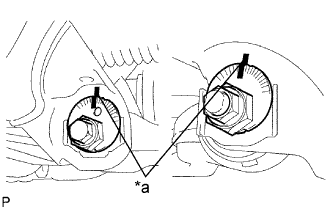
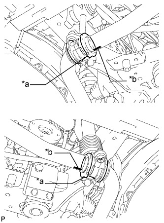
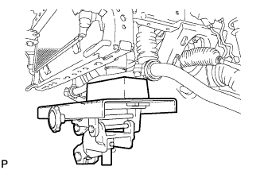
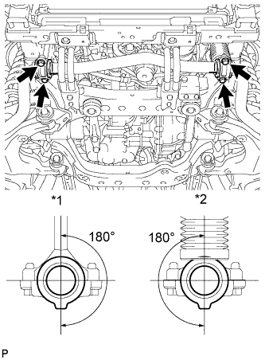
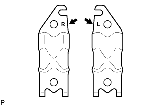

ПЕРЕДНИЙ НИЖНИЙ РЫЧАГ ПОДВЕСКИ > УСТАНОВКА |
| 1. ПРЕДВАРИТЕЛЬНО ЗАКРЕПИТЕ ЛЕВЫЙ НИЖНИЙ РЫЧАГ ПЕРЕДНЕЙ ПОДВЕСКИ № 1 В СБОРЕ |
|  |
Установите нижний рычаг подвески, кулачок регулировки развала, кулачок регулировки развала № 2, пластину регулировки схождения № 2 и кулачок регулировки схождения, и предварительно закрепите их болтом и гайкой.
Совместите метки на кулачке регулировки развала № 2 и кулачке регулировки схождения в сборе с метками на кузове автомобиля. Затяните болт и гайку.
| *a | Метка |
Установите крепление левого переднего нижнего шарового шарнира и закрепите новой гайкой и шплинтом.
Подсоедините крепление левого переднего нижнего шарового шарнира к передней полуоси с помощью 2 болтов.
| 2. ВРЕМЕННО УСТАНОВИТЕ ПЕРЕДНИЙ АМОРТИЗАТОР С ЦИЛИНДРИЧЕСКОЙ ВИНТОВОЙ ПРУЖИНОЙ |
Установите передний амортизатор с цилиндрической винтовой пружиной и шайбу, предварительно закрепив их болтом и гайкой.
| 3. УСТАНОВИТЕ ПЕРЕДНИЙ СТАБИЛИЗАТОР ПОПЕРЕЧНОЙ УСТОЙЧИВОСТИ (для моделей с KDSS) |
|  |
Установите 2 втулки нижних кронштейнов переднего стабилизатора на штангу переднего стабилизатора.
| *a | Выступ |
| *b | Положение метки |
|  |
Обратив идентификационные метки на штанге переднего стабилизатора вниз, поддомкратьте штангу переднего стабилизатора с помощью домкрата.
|  |
Установите штангу переднего стабилизатора и 2 нижних кронштейна переднего стабилизатора, закрепив их 4 болтами.
| *1 | Стойка стабилизатора |
| *2 | Цилиндр стабилизатора |
| 4. УСТАНОВИТЕ КОНЦЕВОЙ КРОНШТЕЙН ПЕРЕДНЕГО СТАБИЛИЗАТОРА (для моделей с KDSS) |
|  |
Установите 2 кронштейна переднего стабилизатора и 2 втулки стоек переднего стабилизатора, закрепив их 4 болтами.
| 5. УСТАНОВИТЕ СКОБУ ЭЛЕМЕНТА ПЕРЕДНЕЙ ПОДВЕСКИ В СБОРЕ (для моделей с KDSS) |
Установите 2 скобы элемента подвески и закрепите их 6 болтами.
| 6. УСТАНОВИТЕ ЗАЩИТУ КАРТЕРА ДВИГАТЕЛЯ № 1 В СБОРЕ (для моделей с KDSS) |
 |
Присоедините защиту картера двигателя к кузову автомобиля, как показано на рисунке.
Вверните 4 болта.
| 7. УСТАНОВИТЕ НИЖНЮЮ ОБЛИЦОВКУ ПЕРЕДНЕГО БАМПЕРА (для моделей с KDSS) |
Установите нижнюю облицовку переднего бампера и закрепите ее 5 болтами и фиксатором.
| 8. УСТАНОВИТЕ ПЕРЕДНЕЕ КОЛЕСО |
| 9. ДОБЕЙТЕСЬ УСТОЙЧИВОСТИ ПОДВЕСКИ |
Опустите автомобиль.
Стабилизируйте подвеску, несколько раз покачав автомобиль вверх-вниз.
| 10. ЗАКРЕПИТЕ ЛЕВЫЙ НИЖНИЙ РЫЧАГ ПЕРЕДНЕЙ ПОДВЕСКИ № 1 В СБОРЕ |
Затяните болт и гайку.
| 11. ЗАТЯНИТЕ ПЕРЕДНИЙ АМОРТИЗАТОР С ЦИЛИНДРИЧЕСКОЙ ВИНТОВОЙ ПРУЖИНОЙ |
Затяните гайку.
| 12. ПРОВЕРЬТЕ И ОТРЕГУЛИРУЙТЕ УГЛЫ УСТАНОВКИ ПЕРЕДНИХ КОЛЕС |
Проверьте и отрегулируйте углы установки передних колес (Нажмите здесь).